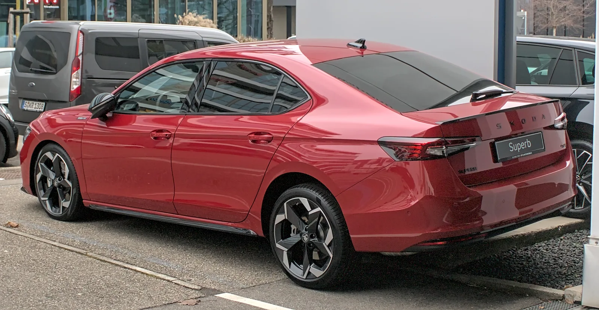
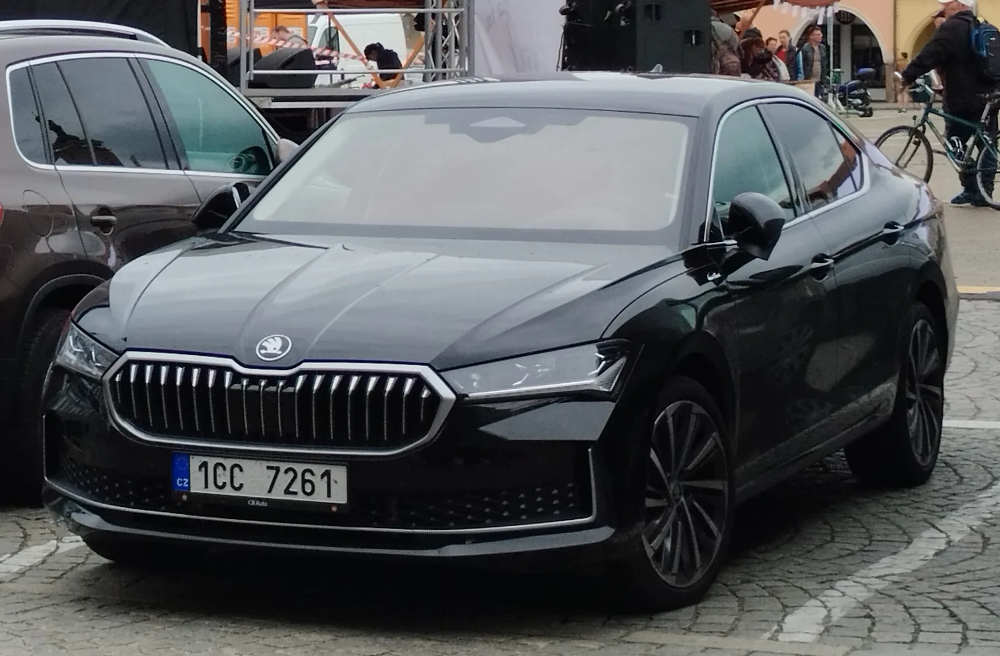
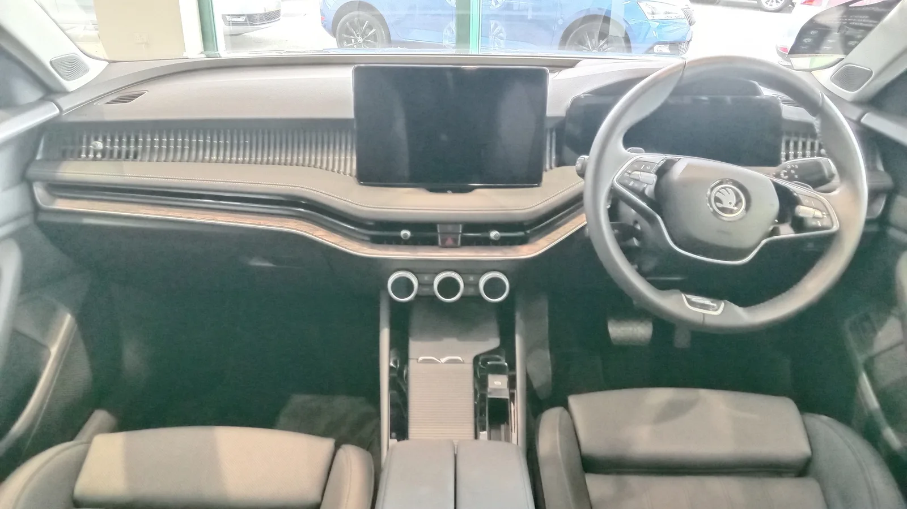

▲ 스코다 슈퍼브 4세대. 디젤 라인업이 인도 시장에서 공개됐지만, 실제 판매는 2027년으로 미뤄졌다 ⓒ Wikimedia Commons
1. 인도서 공개는 됐지만, 정식 판매는 2027년
체코 브랜드 스코다가 4세대 슈퍼브의 디젤 라인업을 인도 시장에 공개했다. 2023년 유럽에서 처음 공개된 4세대 슈퍼브는 폭스바겐그룹의 확장형 MQB 플랫폼을 기반으로 하는데, 이번 공개는 디젤게이트 이후 인도 시장에서 자취를 감췄던 디젤 엔진을 다시 들여오는 현지화 버전에 가깝다. 다만 이는 정식 출시가 아닌 '공개(reveal)' 단계로, 실제 판매와 고객 인도는 인도-EU 자유무역협정(FTA) 발효 시점에 맞춰 2027년 2분기(4~6월)로 예정돼 있다. 최상위 로린 & 클레멘트(L&K) 트림으로만, 그것도 완성차 수입(CBU) 방식의 소량 물량으로 들어올 예정이어서 사실상 한정판에 가깝다. 슈퍼브는 스코다 라인업에서 가장 상급에 위치한 플래그십 세단으로, 토요타 캠리와 정면으로 맞붙는 프리미엄 세단 포지션을 노린다.
외관은 스코다의 새 디자인 언어를 반영해 나비 모양의 대형 그릴('버터플라이 그릴')과 시그니처 LED 주간주행등을 갖췄다. 후면은 Y자 형태의 그래픽을 적용한 분리형 LED 테일램프가 특징이다. 휠은 18인치가 기본 적용된다.

▲ 슈퍼브 4세대 후면. Y자 형태 그래픽의 분리형 LED 테일램프가 특징이다 ⓒ Wikimedia Commons
2. 파워트레인: 2.0 디젤 150마력 + 7단 DSG
인도 공개 모델은 2.0리터 TDI 디젤 엔진 단일 라인업으로 구성됐다. 최고출력 150마력(일부 보도는 148마력으로 표기), 최대토크 360Nm를 내며 7단 DSG(듀얼클러치) 자동변속기와 짝을 이룬다. 구동방식은 전륜구동이다. 유럽 등 다른 시장에서는 2.0리터 터보 가솔린 엔진 라인업도 함께 판매되지만, 이번 인도 공개분은 디젤 단일 트림으로 알려졌다. 전장은 4.9m에 달해 동급 세단 중에서도 실내 공간 확보에 유리한 편이다.

▲ 유럽 현지에서 포착된 슈퍼브 4세대. 버터플라이 그릴과 얇은 LED 헤드램프가 스코다의 새 디자인 언어를 보여준다 ⓒ Wikimedia Commons
3. 실내: 12.9형 인포테인먼트와 마사지 시트
실내는 라운지에 가까운 편안함을 강조했다. 새로운 플로팅 타입 12.9형 터치스크린 인포테인먼트가 중앙을 차지하고, 10형 디지털 계기판과 헤드업 디스플레이가 조합된다. 앞좌석은 통풍·열선은 물론 마사지 기능까지 지원하며, 무선 안드로이드 오토·애플 카플레이도 기본 지원된다. 안전 사양으로는 어댑티브 크루즈 컨트롤과 차선유지보조를 포함한 레벨2 ADAS, 에어백 10개, 360도 서라운드뷰 카메라, 전자식 파킹 브레이크가 적용된다. 다만 파노라마 선루프는 빠졌다는 점이 현지 시승기에서 아쉬운 점으로 지적됐다.

▲ 슈퍼브 실내. 대형 인포테인먼트 스크린과 목재 트림이 프리미엄 세단다운 분위기를 낸다 ⓒ Wikimedia Commons
4. 예상 가격과 경쟁 모델
인도 현지 예상 가격은 55만~60만 루피(약 9,000만~9,800만 원대)로 거론된다. 당초 공개 초기에는 50라크 루피(약 8,000만~8,500만 원대) 안팎이 될 것이라는 전망도 나왔지만, L&K 단일 트림에 완성차 수입(CBU) 방식이 확정되면서 예상 가격대가 한 단계 올라간 것으로 보인다. 스코다 측이 최종 가격 확정을 미루고 있는 이유로는 2027년 초 발효가 예상되는 인도-EU FTA가 꼽힌다. 관세 인하 효과를 반영해 가격을 정하려는 전략으로 풀이된다. 이 가격대에서는 토요타 캠리, 아우디 A4, 메르세데스벤츠 C클래스, BMW 3시리즈 등과 직접 경쟁하게 된다.
| 항목 | 내용 |
|---|---|
| 인도 공개 | 2026년(디젤 라인업) |
| 정식 판매·고객 인도 | 2027년 2분기 예정 |
| 엔진 | 2.0L 디젤, 150마력 |
| 변속기 | 7단 DSG |
| 최대토크 | 360Nm |
| 전장 | 약 4.9m |
| 트림·수입 방식 | L&K 단일 트림, CBU(완성차) 소량 수입 |
| 예상 가격 | 55만~60만 루피(추정) |
5. 한국 시장엔 언제쯤?
정작 스코다는 아직 한국에 정식 진출하지 않은 브랜드다. 폭스바겐그룹은 과거 디젤게이트 이후 국내 시장 신뢰 회복 카드로 스코다 투입을 검토한 바 있지만, 구체적인 수입 계획은 무기한 연기된 상태로 알려져 있다. 스코다 본사와 폭스바겐코리아 양쪽 모두 최근까지 국내 출시에 대한 공식 일정을 밝히지 않고 있어, 이번 슈퍼브 페이스리프트 역시 당장 한국 소비자가 국내 매장에서 만나기는 어려울 전망이다. 다만 동유럽·아시아 시장에서 스코다의 존재감이 커지고 있는 만큼, 국내 수입차 업계에서는 스코다의 국내 진출 가능성을 꾸준히 주시하고 있다.
✅ 슈퍼브 디젤, 핵심만 정리
· 인도서 디젤 라인업 공개, 정식 판매·인도는 2027년 2분기 예정
· 2.0 디젤 150마력 + 7단 DSG 조합
· L&K 단일 트림, CBU 소량 수입, 예상 가격 55만~60만 루피
· 12.9형 인포테인먼트, 마사지 시트, 레벨2 ADAS 탑재
· 한국 정식 수입은 여전히 미정
6. 정리
스코다가 4세대 슈퍼브의 디젤 라인업을 인도 시장에 공개했다. 2.0 디젤 150마력과 7단 DSG를 기본으로, 12.9형 인포테인먼트와 레벨2 ADAS 등 상급 세단다운 사양을 갖췄지만, 정식 판매와 고객 인도는 인도-EU FTA 발효를 기다려 2027년 2분기로 예정돼 있다. 최상위 L&K 트림으로만 완성차 수입되는 소량 물량인 만큼 예상 가격도 55만~60만 루피 선으로 높아졌다. 스코다는 아직 한국에 정식 진출하지 않은 브랜드인 만큼, 이번 신형 슈퍼브를 국내에서 직접 만나기까지는 더 오랜 시간이 필요할 전망이다.